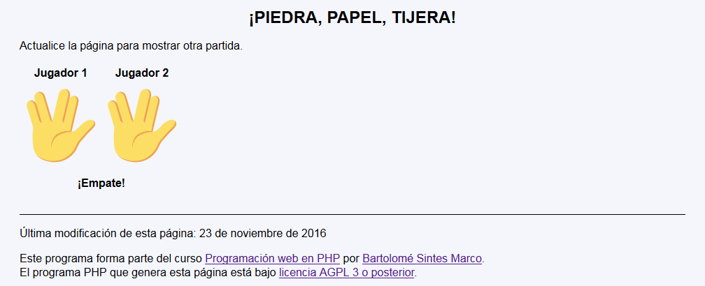
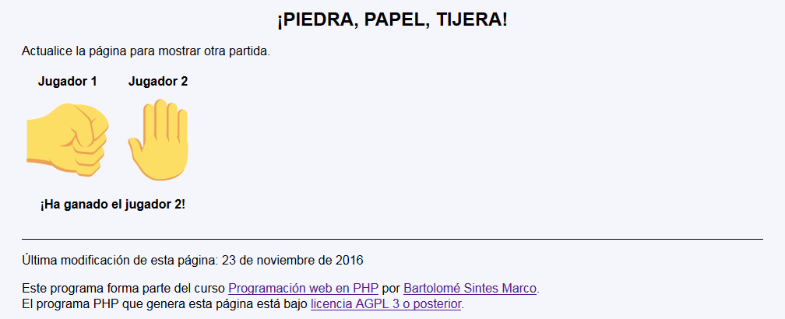

¡Piedra, papel, tijera! - Ejemplo de programa
Nota: El día del examen los alumnos no tienen acceso a este ejemplo, solamente tienen acceso a las capturas del apartado anterior.
Un ejemplo de programa puede probarse en la ventana siguiente:
En este ejercicio se debe crear un programa que muestre una partida del juego infantil "Piedra, papel, tijera".


<h1>¡Piedra, papel, tijera!</h1>
<p>Actualice la página para mostrar otra partida.</p>
<table>
<tr>
<th>Jugador 1</th>
<th>Jugador 2</th>
</tr>
<tr>
<td><span style="font-size: 7rem">🖖</span></td>
<td><span style="font-size: 7rem">🤚</span></td>
</tr>
<tr>
<th colspan="2">¡Ha ganado el jugador 1!</th>
</tr>
</table>
Nota: El día del examen los alumnos no tienen acceso a este ejemplo, solamente tienen acceso a las capturas del apartado anterior.
Un ejemplo de programa puede probarse en la ventana siguiente: